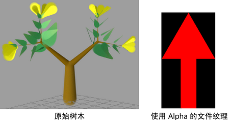
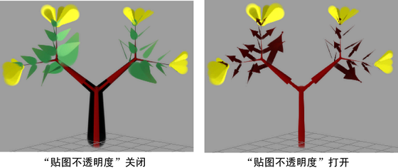
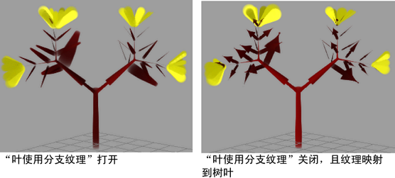
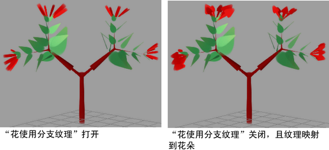

可以将纹理映射到管、树叶和花。下面的步骤使用以下树和文件纹理来演示映射效果。文件纹理具有 Alpha 通道，使黑色区域在映射不透明度时变为透明。

将文件纹理映射到管和分支
- 在“Paint Effects 笔刷设置”(Paint Effects Brush Settings)窗口或笔刷“属性编辑器”(Attribute Editor)中，展开“纹理”(Texturing)面板。有关您将使用的这些设置的详细信息，请参见纹理笔刷设置。
- 启用“贴图颜色”(Map Color)将颜色映射到纹理，并根据需要调整比例和偏移。
- 启用“贴图不透明度”(Map Opacity)以映射不透明度，并根据需要调整比例和偏移。
- 在“纹理类型”(Texture Type)旁边，选择“文件”(File)。
- 在“图像名称”(Image Name)框中，键入要用于文件纹理的图像文件名称，或单击文件夹图标并选择图像文件。

将文件纹理映射到树叶
- 在“Paint Effects 笔刷设置”(Paint Effects Brush Settings)窗口或笔刷“属性编辑器”(Attribute Editor)中，展开。
- 在“叶”(Leaves)下的“叶卷曲”(Leaf Curl)部分中，启用“叶使用分支纹理”(Leaf Use Branch Tex)。
启用后，应用于管和分支的纹理（在本例中，纹理为箭头）也会应用于叶。
禁用后，纹理将映射到树叶的 UV 坐标。不透明度（或 Alpha）自动进行映射。
- 在“图像名称(Image Name)”框中，键入要用于文件纹理的图像文件名称，或单击文件夹图标并选择图像文件。

将文件纹理映射到花
- 在“Paint Effects 笔刷设置”(Paint Effects Brush Settings)窗口或笔刷“属性编辑器”(Attribute Editor)中，展开。
- 在“花”(Flowers)下的“花瓣卷曲”(Petal Curl)区域中，启用“花使用分支纹理”(Flower Use Branch Tex)。
启用后，应用于管和分支的纹理（在本例中，纹理为箭头）也会应用于花。
禁用后，纹理将映射到花的 UV 坐标。不透明度（或 Alpha）自动进行映射。
- 在“图像名称”(Image Name)框中，键入要用于文件纹理的图像文件名称，或单击文件夹图标并选择图像文件。
